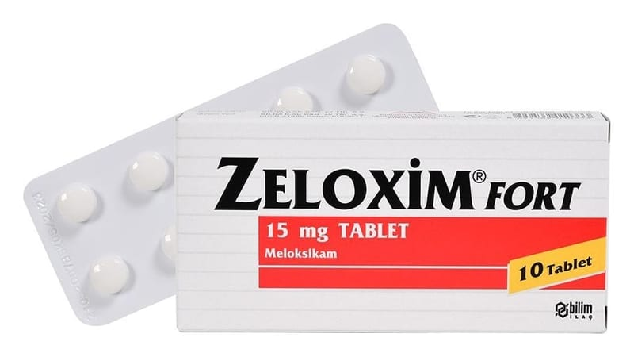

Zeloxim Fort 15 mg Tablet, 30 Adet

Ne için kullanılır
KT · Bölüm 1ZELOXİM, her bir tablette etkin madde olarak 15 mg meloksikam içeren açık sarı renkli yuvarlak, bir yüzü çentikli, çentiğin iki tarafında “1N” yazılı tabletlerdir. Çentiğin amacı tableti eşit dozlara bölebilmektir. Böylece tablet 7.5 mg’lık eşit yarımlara bölünebilir. 10 ve 30 tablet içeren Al/PVC/LDPE/PVDC blisterlerde, kullanma talimatı ile birlikte karton kutuda sunulur.
Meloksikam, eklem ve kaslardaki iltihap ve ağrıyı azaltmak için kullanılan steroid içermeyen iltihap giderici ilaçlar (non-steroidal antiinflamatuvar ilaçlar-NSAİİ) grubuna dahildir.
ZELOXİM FORT, Kireçlenme (osteoartrit), eklemlerde ağrı ve şekil bozukluğuna yol açan süreğen bir hastalık olan romatoid artrit ve sırt eklemlerinde sertleşme ile seyreden ağrılı ilerleyici bir romatizmal hastalık olan ankilozan spondilitin belirti ve bulgularının tedavisinde Eklemlerdeki ürik asit birikimine bağl ı olarak özellikle ayak ve bacaklardaki eklemlerde ani ağrı nöbetleri şeklinde seyreden akut gut artriti, akut kas iskelet sistemi ağrıları, ameliyat sonrası ağrı ve ağrılı adet görme (dismenore) tedavisinde kullanılır.